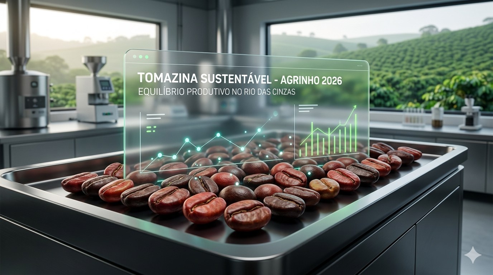

Monitore abaixo a simulação dos nossos índices de sustentabilidade regional.
Painel de Monitoramento
Fonte: Estimativas baseadas em relatórios da ACENPP e Prefeitura.
0%
0%
Simulador de Futuro
> Aguardando seleção...
Onde o café especial encontra a preservação ambiental e a beleza do Salto Cavalcanti.
Este site foi desenvolvido para o Concurso Agrinho 2026. O objetivo é demonstrar como a tecnologia caminha lado a lado com a agricultura familiar de Tomazina, protegendo o Rio das Cinzas e fortalecendo a produção de Cafés Especiais para um futuro sustentável.
Abaixo, a imagem gerada por inteligência artificial representa nossa visão de futuro: a tecnologia monitorando nossa produção de café com a força do Salto Cavalcanti ao fundo. É a união entre inovação e herança natural.

Mas o futuro se constrói respeitando a realidade. A fotografia abaixo revela o majestoso Rio das Cinzas em Tomazina. Preservar este leito é garantir a vida da nossa bacia hidrográfica e a qualidade do café que exportamos.

Fonte: Acervo Wikipedia / Autor: Rodrigo.S.Passos
Monitore abaixo a simulação dos nossos índices de sustentabilidade regional.
Fonte: Estimativas baseadas em relatórios da ACENPP e Prefeitura.
> Aguardando seleção...